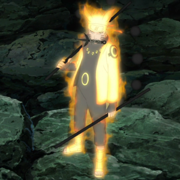
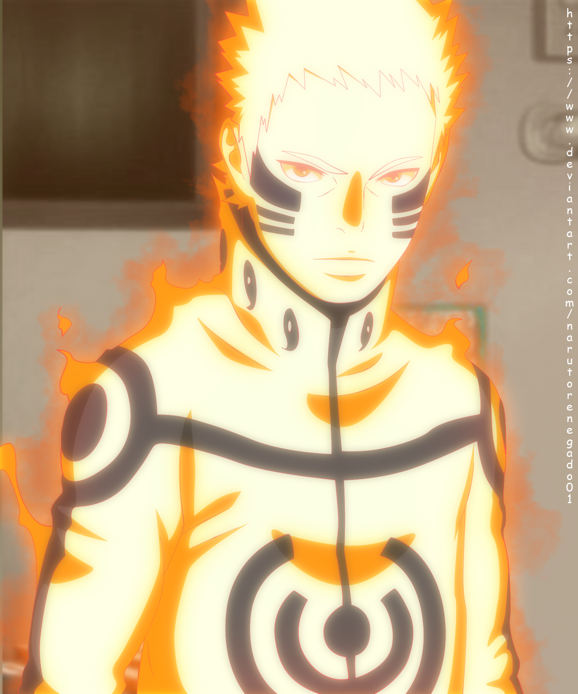
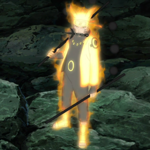
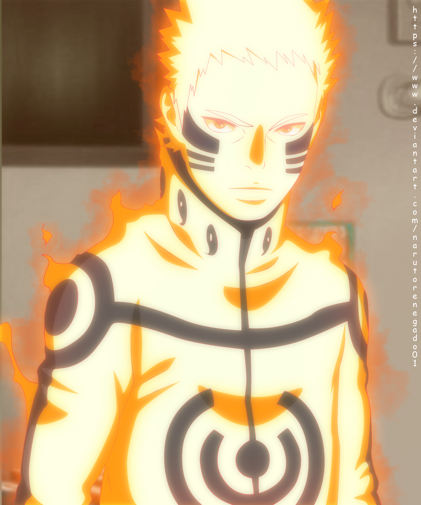

Naruto (Japanese ナルト) is a Japanese manga series written and illustrated by Masashi Kishimoto. It tells the story of Naruto Uzumaki, a young ninja who seeks recognition from his peers and dreams of becoming the Hokage, the leader of his village. The story is told in two parts – the first set in Naruto's pre-teen years, and the second in his teens. The series is based on two one-shot manga by Kishimoto: Karakuri (1995), which earned Kishimoto an honorable mention in Shueisha's monthly Hop Step Award the following year, and Naruto (1997). Naruto was serialized in Shueisha's magazine, Weekly Shōnen Jump from 1999 to 2014, and released in tankōbon (book) form in 72 volumes.
The manga was adapted into an anime television series produced by Pierrot and Aniplex, which broadcast 220 episodes in Japan from 2002 to 2007; the English adaptation of the series aired on Cartoon Network and YTV from 2005 to 2009. Naruto: Shippuden, a sequel to the original series, premiered in Japan in 2007, and ended in 2017, after 500 episodes. The English adaptation was broadcast on Disney XD from 2009 to 2011, airing the first 98 episodes, and then switched over to Adult Swim's Toonami programming block in January 2014, starting over from the first episode. The English adaptation is still airing weekly on Adult Swim to this day. Besides the anime series, Pierrot has
developed eleven movies and twelve original video animations (OVAs). Other Naruto-related merchandise includes light novels, video games, and trading cards developed by several companies.
Viz Media licensed the manga and anime for North American production and serialized Naruto in their digital Weekly Shonen Jump magazine. The anime series began airing in the United States and Canada in 2005, and in the United Kingdom and Australia in 2006 and 2007, respectively. The films and most OVAs from the series were also released by Viz, with the first film premiering in movie theaters. Viz Media began streaming the two anime series on their streaming service Neon Alley in December 2012. The story of Naruto continues with Naruto's son, Boruto Uzumaki, in Boruto: Naruto Next Generations: Boruto wishes to create his own ninja way instead of following his father's.
Naruto is the fourth best-selling manga series in history, selling 250 million copies worldwide in 46 countries.[4] It has become one of Viz Media's best-selling manga series; their English translations of the volumes have appeared on USA Today and The New York Times bestseller list several times, and the seventh volume won a Quill Award in 2006. Reviewers praised the manga's character development, strong storylines, and well-executed fight scenes, though some felt the fight scenes slowed the story down. Critics noted that the manga, which has a coming-of-age theme, makes use of cultural references from Japanese mythology and Confucianism.
Plot
Part 1
A powerful fox known as the Nine-Tails attacks Konoha, the hidden leaf village in the Land of Fire, one of the Five Great Shinobi Countries in the Ninja World. In response, the leader of Konoha and the Fourth Hokage, Minato Namikaze (with his wife Uzumaki Kushina) seals the fox inside the body of his newborn son, Naruto Uzumaki, making Naruto a host of the beast;[e] this costs Naruto's father his life, and the Third Hokage returns from retirement to become leader of Konoha again. Naruto is often ridiculed by the Konoha villagers for being the host of the Nine-Tails. Because of a decree made by the Third Hokage forbidding anyone to mention these events, Naruto knows nothing about the Nine-Tails until 12 years later, when Mizuki, a renegade ninja, reveals the truth to Naruto. Naruto then defeats Mizuki in combat, earning the respect of his teacher Iruka Umino.[f]
Shortly afterwards, Naruto becomes a ninja and joins with Sasuke Uchiha, against whom he often competes, and Sakura Haruno, on whom he has a crush, to form Team 7, under an experienced sensei, the elite ninja Kakashi Hatake. Like all the ninja teams from every village, Team 7 completes missions requested by the villagers, ranging from doing chores and being bodyguards to performing assassinations.
After several missions, including a major one in the Land of Waves, Kakashi allows Team 7 to take a ninja exam, enabling them to advance to a higher rank and take on more difficult missions, known as Chunin Exams. During the exams, Orochimaru, a wanted criminal, invades Konoha and kills the Third Hokage for revenge. Jiraiya, one of the three legendary ninjas, declines the title of Fifth Hokage and searches with Naruto for Tsunade whom he chooses to become Fifth Hokage instead.
During the search, it is revealed that Orochimaru wishes to train Sasuke because of his powerful genetic heritage, the Sharingan.[g] After Sasuke attempts and fails to kill his older brother Itachi[h] when he showed up in Konoha to kidnap Naruto, he joins Orochimaru, hoping to gain from him the strength needed to kill Itachi. The story takes a turn when Sasuke leaves the Konoha village and when Tsunade finds out, she sends a group of ninja, including Naruto, to retrieve Sasuke, but Naruto is unable to persuade or force him to come back. Naruto and Sakura do not give up on Sasuke: Naruto leaves Konoha to receive training from Jiraiya to prepare himself for the next time he encounters Sasuke, while Sakura becomes Tsunade's apprentice.
Part II
Two and a half years later, Naruto returns from his training with Jiraiya. The Akatsuki starts kidnapping the hosts of the powerful Tailed Beasts. Team 7 and other Leaf ninja fight against them and search for their teammate Sasuke. The Akatsuki succeeds in capturing and extracting seven of the Tailed Beasts, killing all the hosts except Gaara, who is now the Kazekage. Meanwhile, Sasuke betrays Orochimaru and faces Itachi to take revenge. After Itachi dies in battle, Sasuke learns from the Akatsuki founder Tobi that Itachi received an order from Konoha's superiors to destroy his clan to prevent a coup. He accepted it on the condition that he would be allowed to spare Sasuke. Saddened by this revelation, Sasuke joins the Akatsuki to destroy Konoha in revenge. As Konoha ninjas defeat several Akatsuki members, the Akatsuki figurehead leader, Nagato, kills Jiraiya and devastates Konoha, but Naruto defeats and redeems him, earning the village's respect and admiration.
With Nagato's death, Tobi, disguised as Madara Uchiha (one of Konoha's founding fathers), announces that he wants to capture all nine Tailed Beasts to perform an illusion powerful enough to control all humanity and achieve world peace. The leaders of the five ninja villages refuse to help him and instead join forces to confront Tobi and his allies. That decision results in a Fourth Shinobi World War between the combined armies of the Five Great Countries (known as the Allied Shinobi Forces) and Akatsuki's forces of zombie-like ninjas. The Five Kage try to keep Naruto, unaware of the war, in a secret island turtle near Kumogakure (Hidden Cloud Village), but Naruto finds out and escapes from the island with Killer Bee, the host of the Eight-Tails. At that time, Naruto—along with the help of Killer Bee—gains control of his Tailed Beast and the two of them head for the battlefield.
During the conflict, it is revealed that Tobi is Obito Uchiha, a former teammate of Kakashi's who was thought to be dead. The real Madara saved Obito's life, and they have since collaborated. As Sasuke learns the history of Konoha, including the circumstances that led to his clan's downfall, he decides to protect the village and rejoins Naruto and Sakura to thwart Madara and Obito's plans. However, Madara's body ends up possessed by Kaguya Otsutsuki, an ancient princess who intends to subdue all humanity. A reformed Obito sacrifices himself to help Team 7 stop her. Once Kaguya is sealed, Madara dies as well. Sasuke takes advantage of the situation and takes control of all the Tailed Beasts, as he reveals his goal of ending the current village system. Naruto confronts Sasuke to dissuade him from his plan, and after they almost kill each other in a final battle, Sasuke admits defeat and reforms. After the war, Kakashi becomes the Sixth Hokage and pardons Sasuke for his crimes. Years later, Kakashi steps down while Naruto marries Hinata Hyuga and becomes the Seventh Hokage, raising the next generation.


 


